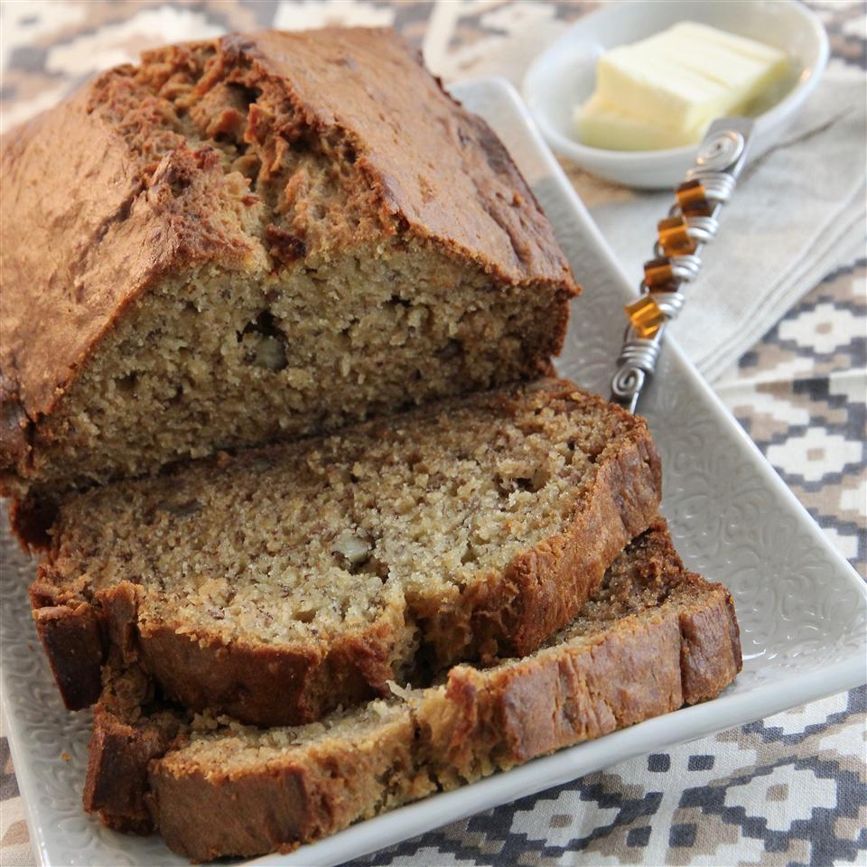

Banana Bread

Description
Banana bread at its best.
Lots of bananas and a hint of almond make a delicious banana bread.
Per Serving: 380 calories; protein 5.8g; carbohydrates 61.2g;
fat 13.3g; cholesterol 77mg; sodium 554.4mg.
Ingredients
- cooking spray
- 2 cups all-purpose flour, sifted
- 1 teaspoon salt
- 1 teaspoon baking soda
- 5 very ripe bananas, mashed
- ¾ cup brown sugar
- ½ cup butter, softened
- 3 drops almond extract
Steps
- Preheat oven to 350 degrees F (175 degrees C).
Spray a loaf pan with cooking spray.
- Whisk flour, salt, and baking soda together in a bowl.
- Mix bananas, brown sugar, butter, and almond extract together in a
separate bowl. Add flour mixture;
mix just until flour is incorporated, about 1 minute.
Transfer mixture to the prepared loaf pan.
- Bake in the preheated oven until a toothpick inserted into the
center comes out clean, about 1 hour.
Let cool before serving, about 30 minutes.